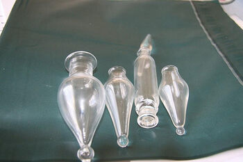
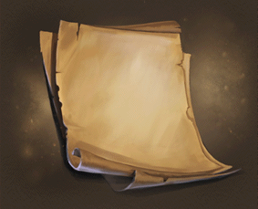
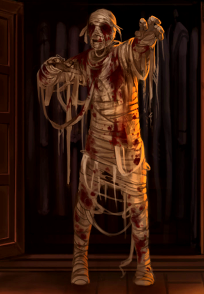

|

PhialPhials (also spelled as vials) are containers which usually hold liquids or gases. Most potions and potion ingredients are bottled in phials and are consequently sold in those amounts. One set of glass or crystal phials are part of the required equipment for classes at Hogwarts School of Witchcraft and Wizardry. One place first-years can acquire them are in Wiseacre's Wizarding Equipment in Diagon Alley: glass phials cost three Galleons and crystal phials cost seven. Phials can also be purchased as part of the Potion Kit Bag sold at Mr Mulpepper's Apothecary, also in Diagon Alley. |

ParchmentParchment is a thin material made from calfskin, sheepskin or goatskin, often split. Its most common use was as a material for writing on, for documents, notes, or the pages of a book, codex or manuscript. It is distinct from leather in that parchment is limed but not tanned, therefore it is very reactive with changes in relative humidity and is not waterproof. The finer qualities of parchment are called vellum. Even in modern times, parchment has been called the "finest writing material ever devised". Modern products do not reach the quality of medieval manufactured parchment. In the wizarding world, parchments take the role of normal paper, and most wizards and witches use them as writing material, along with quills and ink. Dolores Umbridge uses pink-coloured parchments. Hermione Granger enchanted a piece of parchment bearing the signatures of Dumbledore's Army with a jinx that would punish anyone within the organisation who dared to betray their secrecy. Students wishing to enter the Triwizard Tournament placed pieces of parchment with their names into the Goblet of Fire. |

MummyA mummy is a corpse that has been ceremonially preserved through the removal of its internal organs and subsequent treatment with natron and resin, and wrapping in bandages. Some cultures, most famously the Ancient Egyptians, preserved their dead in this fashion. |